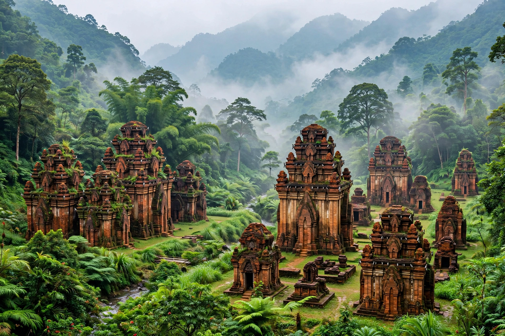

| Kingdom of Champa | |
|---|---|
| Existed | c. 192 – 1832 AD |
| Location | Coastal central and southern Vietnam |
| People | Cham (Austronesian) |
| Capitals | Indrapura; Vijaya; Panduranga |
| Religions | Hinduism (Shaivism); later Islam; Buddhism |
| Succeeded by | Nguyen dynasty Vietnam |

Champa (Cham: Campa; Vietnamese: Chiêm Thành) was a collection of independent Cham polities that extended across the coast of what is now central and southern Vietnam from roughly the 2nd to the 19th century AD. A maritime, Indianised civilisation, Champa was renowned for its brick temple architecture, Sanskrit inscriptions and seaborne trade, and spent much of its history in conflict with its neighbours Dai Viet to the north and the Khmer Empire to the west.
The Cham kingdoms emerged from the earlier Sa Huynh culture as the Han Chinese commandery of Lin Yi was thrown off around 192 AD. Strongly influenced by India, the Cham adopted Hinduism — especially the worship of Shiva — Sanskrit epigraphy, and Indian royal ideology, while retaining their Austronesian language and matrilineal customs. Their principal religious centre was My Son, a valley of brick tower-sanctuaries built between the 4th and 13th centuries, and their succession of capitals included Indrapura, Vijaya (near modern Quy Nhon) and the southern principality of Panduranga.
Champa fought repeated wars with Dai Viet and Angkor. Cham forces sacked the Khmer capital Yasodharapura in 1177 after a naval expedition across the Mekong and Tonle Sap, but Khmer king Jayavarman VII retaliated by conquering Champa. The decisive blow came in 1471, when the Vietnamese emperor Le Thanh Tong captured Vijaya and annexed the northern two-thirds of the country. Reduced to Panduranga in the far south, Champa survived as a vassal principality until the emperor Minh Mang abolished it in 1832 after a series of revolts, completing Vietnam's southward expansion, the Nam tien.
Cham art is famed for its red-brick temples built without mortar, its sandstone sculpture of Shiva, lingas and dancing apsaras, and its stelae in Sanskrit and Old Cham — among the earliest written records in Southeast Asia. From the 16th century Islam spread among the Cham, and today the Cham people of Vietnam and Cambodia are divided mainly between Muslim (Bani) and Hindu (Balamon) communities, preserving festivals such as Kate. Champa's ruins at My Son are a UNESCO World Heritage Site.